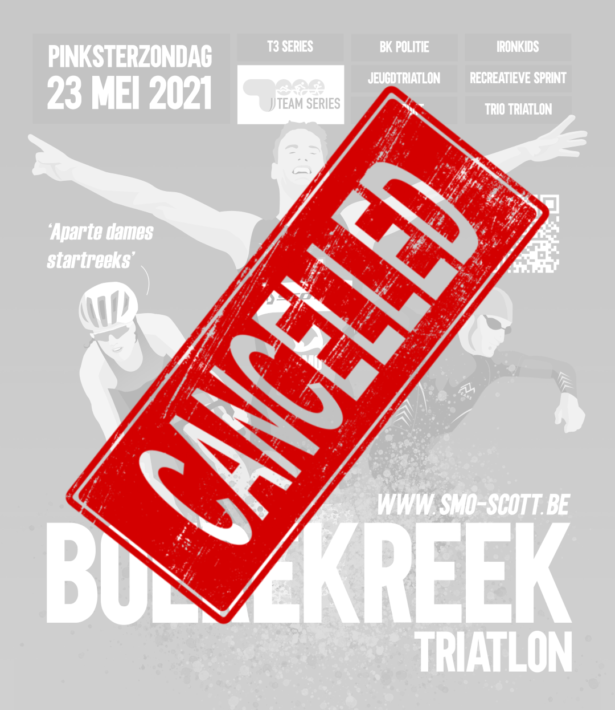
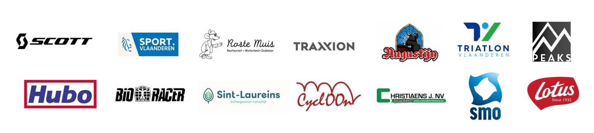

Ons triatleten-DNA bestaat uit een doorgedreven motivatie, met een sterke wil en een grote ambitie. Daar kunnen we ons allen in herkennen. Het typeert wie we zijn, en waarvoor we staan, individueel als triatleet, maar ook als triatlonclub SMO-SCOTT Triatlonteam.
Maar hoe doordrongen ons DNA daarvan ook is, de huidige gezondheidsvoorwaarden, maatregelen van de Belgische regering en de ongunstige ontwikkeling van de situatie, laten ons niet toe om ons groots triatlonfeest: de Boerekreektriatlon, in zijn traditionele vorm te laten plaatsvinden.
Met diepe teleurstelling leest u hierbij de officiële annulering voor de gezelligste triatlon van het Meetjesland op zondag 23 mei 2021, op naar de Boerekreektriatlon van zondag 5 juni 2022!
We willen jullie alvast hartelijk danken voor elk jullie inschrijving, en bijhorend vertrouwen in onze organisatie. In samenwerking met Triatlon Vlaanderen beloven we jullie elk een gehele terugbetaling van het door jouw betaalde inschrijvingsbedrag.
** UPDATE - Mogelijks kunnen de T3 serie wedstrijden na goedkeuring van de triatlon federatie nog doorgaan.
